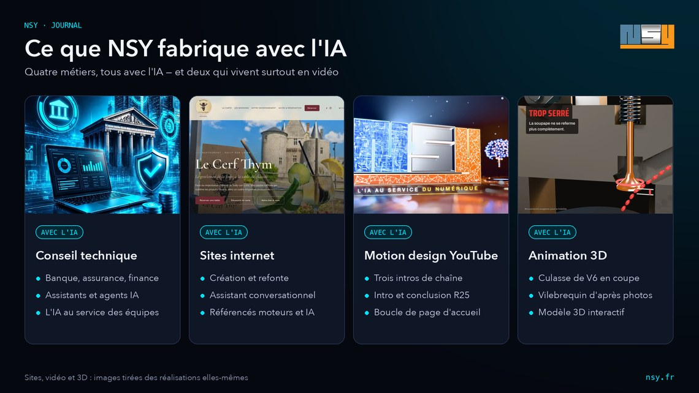
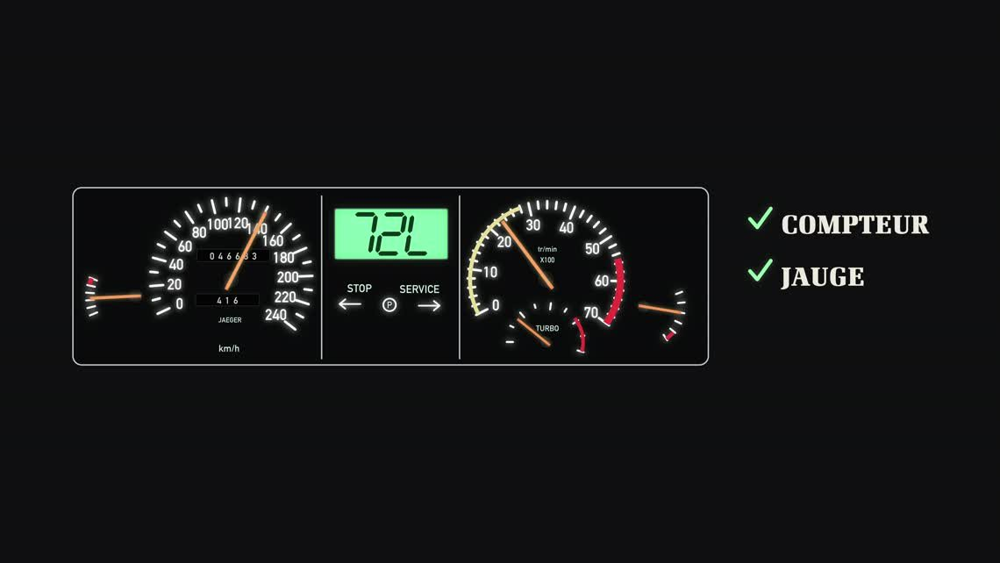
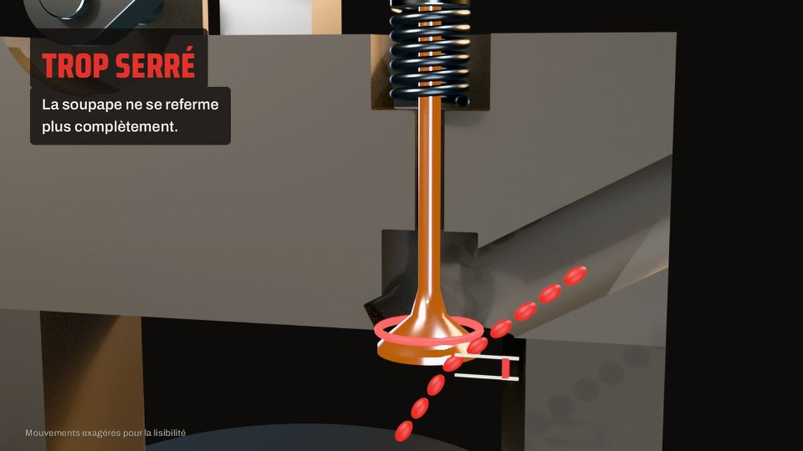
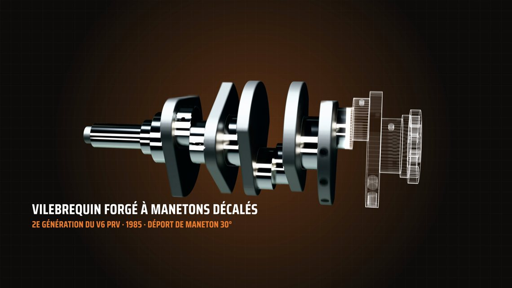

Pas seulement des sites :
ce que NSY fabrique avec l'IA
On nous connaît pour des sites internet conçus avec l'IA. C'est une partie du métier, pas tout le métier. En octobre et en novembre, l'atelier a livré de la vidéo et de la 3D : trois intros de chaîne YouTube, dont celle de NSY, l'intro et la conclusion d'une vidéo sur la R25 Limousine, une culasse de V6 en coupe animée en 3D pour un film de quinze minutes, un vilebrequin modélisé d'après trois photos. Nos quatre offres passent désormais par l'IA, et deux d'entre elles vivent surtout en vidéo.

Quatre métiers, tous avec l'IA
NSY fait du conseil technique senior pour la banque et l'assurance depuis 2018 : architecture, migration Java EE, WildFly, supervision de production. L'IA y est entrée aussi, de deux façons. En mission, elle sert la productivité des équipes. Dans les applications métier, elle s'intègre : un modèle de langage devient un assistant documentaire qui cite ses sources ou un agent outillé aux gestes bornés, intégré avec la même rigueur qu'un composant critique, coûts, quotas et confidentialité compris.
À côté, trois services mettent l'IA au service du numérique : la réalisation de sites internet, le motion design pour YouTube et l'animation 3D. Le site reste le plus visible des trois, parce qu'il est en ligne et qu'on le visite. Les deux autres se voient moins, parce qu'ils vivent dans les vidéos des autres. C'est d'eux que parle cet article.
Des intros et des outros de chaîne
Une intro de chaîne dure douze à quatorze secondes. Elle doit dire qui parle, et donner envie de rester.
« Le V à 90° », pour PRV Concept. L'association du moteur V6 PRV voulait une intro qui raconte son moteur. Elle dure 14 secondes, en 4K à 60 images par seconde. Un vilebrequin se dessine en fil de fer, devient de l'acier, tourne, puis présente sa face, qui devient le disque du logo. Un orchestre en si mineur porte le tout, et la fin s'appuie sur la vraie montée en régime d'un V6. Transparence : PRV Concept est l'association que préside le fondateur de NSY. C'est notre laboratoire, la méthode y est éprouvée avant d'être proposée à un client.
« Zick'Family en camping-car », le premier client. Nicolas Zickgraf accompagne l'achat et la vente de camping-cars sur sa chaîne YouTube. Son intro montre un camping-car qui naît d'un coup de crayon, pièce par pièce, prend la route en montagne, et vient se poser dans son logo. Le camping-car et le chien de la famille ont été générés en 3D par une IA, à partir du logo et de photos, puis découpés en pièces et animés avec un rendu de dessin au trait. Le logo, lui, est le fichier du client : il n'a jamais été redessiné. Trois habillages musicaux lui ont été proposés, il a choisi le sien. Il a laissé un avis cinq étoiles sur Google.
Une intro et une conclusion pour une R25 Limousine. Pour une vidéo de Nicolas consacrée à l'électronique de la Renault 25 Limousine, l'atelier a réalisé une intro de 18 secondes et une conclusion de 26 secondes avec son écran de fin YouTube. Le losange Renault se dessine bande par bande, le combiné d'instruments s'allume, les pannes à traiter s'affichent une à une. La voiture parle avec sa propre synthèse vocale, et la musique est accordée sur son carillon : la note de référence a été réglée à 453 Hz pour que les deux sonnent juste ensemble.


« La forge », la nôtre. L'intro de NSY dure 12 secondes, en 4K à 60 images par seconde, d'un seul plan-séquence. On part au ras d'une carte électronique en relief, où le courant file vers le centre. Un cerveau fait de neurones se lève de sa puce et foudroie la carte. Au grand éclair, le centre fond, et le logo remonte du bain de métal, lettre par lettre, puis se sculpte : un front de refroidissement monte du pied au sommet et révèle les vraies matières, le circuit bleu du N, l'acier du S, le réseau orange du Y. Le courant suit alors les 511 pistes du circuit du N, et les 237 neurones du Y dérivent et se reconnectent. La devise, « L'IA au service du numérique », s'inscrit en dernier : un influx court le long de la ligne, et chaque lettre se fige, chauffée à blanc, dans une gerbe de soudure. Les lettres sont les pièces du fichier maître du logo de 2018 ; le métal fondu n'en est qu'une copie, qui redevient nette en se sculptant. La musique, en la mineur à 120 battements par minute, est jouée par de vrais instruments échantillonnés (cordes, cors, trombones, percussions), avec un geste par temps. Le rendu 4K a demandé un peu moins de neuf heures de calcul, et une version courte de six secondes en a été tirée sans rien recalculer.
La fin de « La forge » tourne aussi en boucle au cœur de la page d'accueil de nsy.fr. Pour qu'une boucle ne se voie pas, il ne suffit pas de mettre la fin bout à bout avec le début : tout ce qui bouge — le courant, les neurones, le cerveau, la poussière, le reflet, la caméra — a été réglé pour revenir exactement à sa place au bout de 7,5 secondes. La dernière image s'enchaîne sur la première au pixel près, et la vidéo pèse 1,3 Mo.
Une outro n'est pas une intro jouée à l'envers. Elle laisse la place aux éléments que YouTube superpose à la fin d'une vidéo, deux vignettes et un bouton d'abonnement, pendant au moins cinq secondes. L'animation dessine ces emplacements, pour que rien ne tombe au hasard.
De la 3D qui explique
La 3D n'est pas là pour faire joli. Elle montre ce qu'une caméra ne peut pas filmer.
Une culasse en coupe. Le film sur le réglage des culbuteurs d'une R25 V6 Turbo, tourné avec Zick'Family et PRV Concept, devait expliquer ce qui se passe à l'intérieur du moteur. L'atelier a modélisé une culasse en coupe : l'arbre à cames et le profil en œuf de sa came, le culbuteur, sa vis de réglage et son contre-écrou, la soupape, son ressort et son siège. Deux animations en sont sorties.
- « Trop serré ou trop lâche ? » montre, en deux minutes, ce que devient la soupape selon le jeu laissé au culbuteur. Trop serré, elle ne se referme plus sur son siège. Trop lâche, le culbuteur la frappe à chaque tour, et c'est le claquement qu'on entend moteur tournant. Elle a été recalée sur la voix off, temps par temps.
- « Position de la came » suit le mouvement depuis la roue levée jusqu'à l'arbre à cames, en passant par le cardan, la boîte de vitesses, le vilebrequin et la courroie. Elle explique pourquoi, roue levée et vitesse engagée, on fait tourner la roue pour amener chaque came en position.


Un vilebrequin d'après photos. Celui de l'intro de PRV Concept est un vrai vilebrequin de V6 PRV de deuxième génération, modélisé d'après trois photos de la pièce : quatre tourillons, trois paires de manetons décalés de 30°, les contrepoids, la bride du volant. Un amateur du moteur le reconnaît au premier coup d'œil, et c'est le but.

La R25, notre terrain d'essai
La Renault 25 est le fil rouge de l'atelier. Une R25 Baccara V6 Turbo en 4K tourne en Short sur la chaîne de NSY. Sur le site, la même voiture se manipule en fil de fer dans le navigateur : 163 éléments du modèle ont été fusionnés, simplifiés et convertis en lignes, pour que le visiteur la fasse pivoter sans ralentir la page. C'est la démonstration de ce que nous proposons à une marque : un produit qu'on prend en main avant de l'acheter.

Ce que fait l'IA, et ce qu'elle ne fait pas
L'IA accélère trois choses. Elle génère un modèle 3D à partir d'une image, quand on n'a pas besoin de la cote exacte. Elle écrit les scripts qui construisent chaque plan, si bien qu'une intro se reconstruit d'une seule commande après une retouche. Elle décline une vidéo en 16:9 et en vertical sans tout refaire.
Elle ne fait pas le reste. Le logo d'un client n'est jamais redessiné par une IA : il part de son fichier, découpé en pièces exactes. Chaque geste tombe sur un temps de la musique, écrit d'avance dans une partition. Chaque image clé est contrôlée avant le rendu final. Et une pièce mécanique se modélise d'après la pièce réelle : un vilebrequin faux se voit tout de suite, par les gens à qui il s'adresse.
Et les sites ?
Ils restent au cœur de l'offre, en création comme en refonte, avec un assistant conversationnel ancré dans vos contenus et un référencement pensé pour les moteurs comme pour les assistants IA. Le Cerf Thym et PRV Concept en sont les exemples. Mais une marque vit aussi sur YouTube, sur les réseaux, dans une vidéo de démonstration ou un produit qu'on fait tourner à l'écran. C'est la même exigence, sur un autre support.
Une intro ou une outro pour votre chaîne, une pièce ou un produit à animer en 3D, un logo à mettre en volume : décrivez votre projet, nous revenons vers vous sous 48 heures ouvrées avec un cadrage. Les réalisations sont visibles sur la page dédiée, en vidéo.
Cet article vit aussi sur les réseaux — venez en discuter